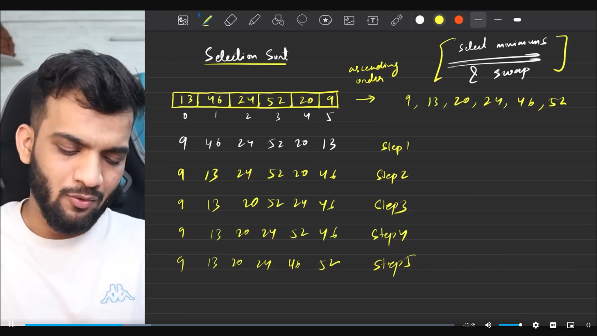
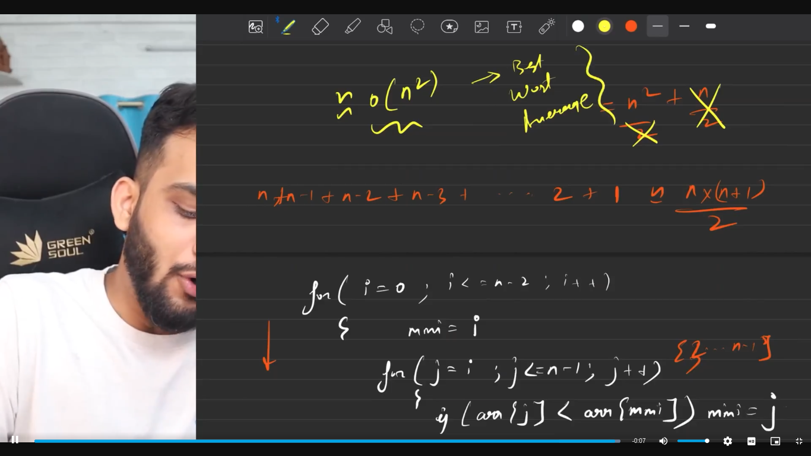
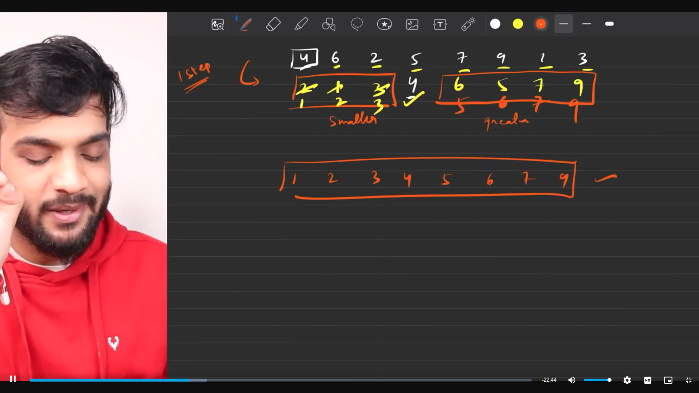
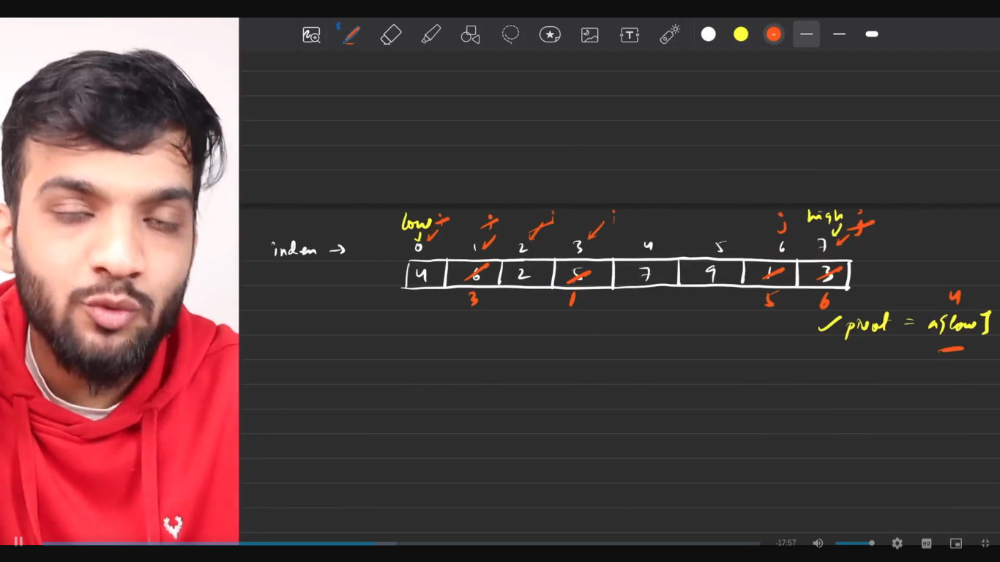
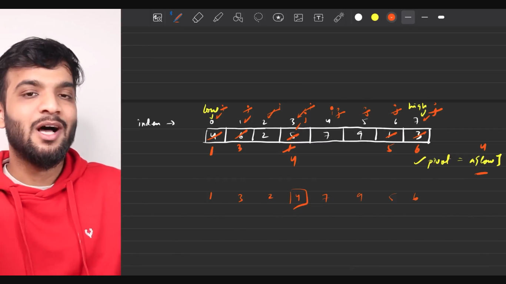
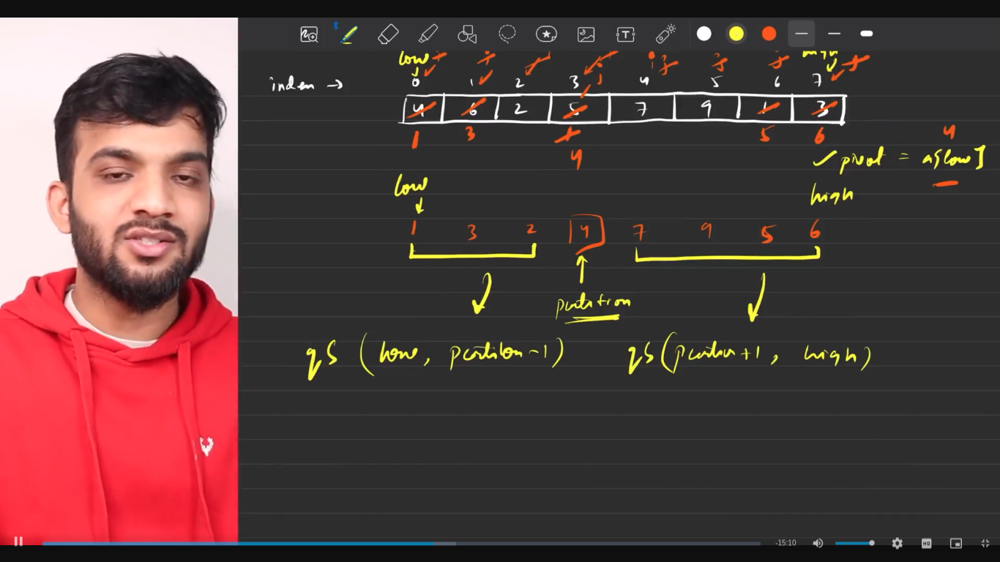
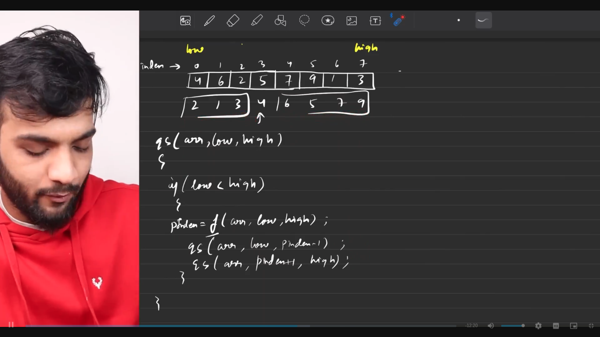
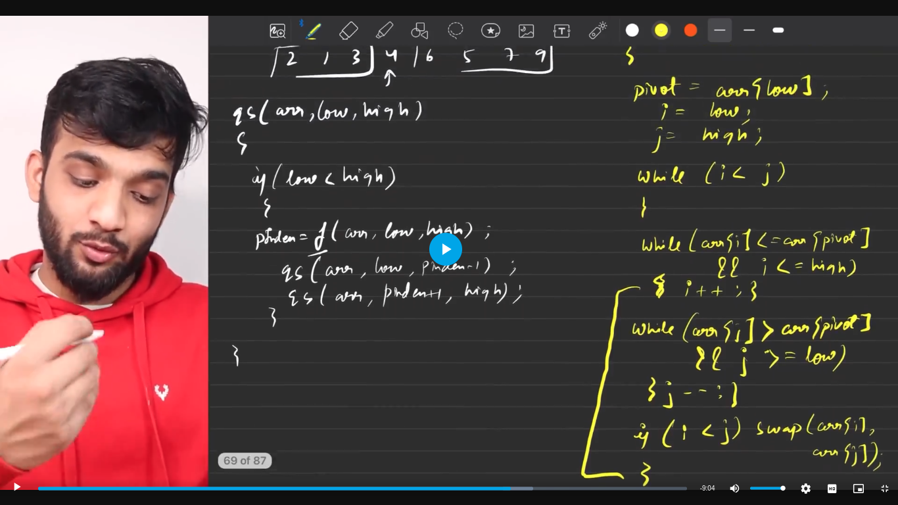
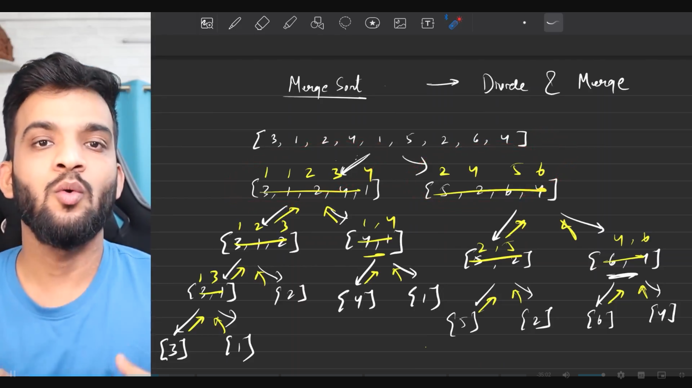
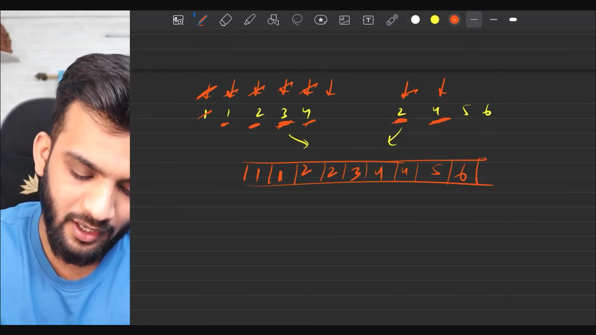

Sorting Algorithms
Table of Contents
1. Selection Sort
- Select minimum and swap

- Code
class Solution { public: vector<int> selectionSort(vector<int>& nums) { for(int i=0; i<nums.size()-1;i++){ int minIndex = i; for(int j=i+1; j<nums.size();j++){ if(nums[j] < nums[minIndex]) minIndex = j; } if(minIndex != i) swap(nums[minIndex], nums[i]); } return nums; } };
- Time Complexity

2. Bubble Sort
- Push the max element to the last by using adjacent swaps
- The following piece of code has a time complexity of O(n2)
class Solution { public: vector<int> bubbleSort(vector<int>& nums) { for(int i=nums.size()-1; i>=1; i--){ for(int j=0; j<i;j++){ if(nums[j]>nums[j+1]) swap(nums[j], nums[j+1]); } } return nums; } };
- It can be further optimized to O(n) when the array is already in sorted order
class Solution { public: vector<int> bubbleSort(vector<int>& nums) { int didSwap = 0; for(int i=nums.size()-1; i>=1; i--){ for(int j=0; j<i;j++){ if(nums[j]>nums[j+1]) { swap(nums[j], nums[j+1]); didSwap = 1; } } if (didSwap == 0) break; } return nums; } };
3. Insertion Sort
- Take an element and place it in its correct position.
- Time Complexity of O(n2). O(n) when the array is already sorted.
class Solution { public: vector<int> insertionSort(vector<int>& nums) { for(int i=0; i<nums.size();i++){ int j =i; while(j > 0 && nums[j-1] > nums[j]) { swap(nums[j], nums[j-1]); j--; } } return nums; } };
4. Quick Sort
- Pick a Pivot. A Pivot can be
- First element of the array.
- Last element of the array.
- Median of the array.
- Any random element of the array.
- Place the Pivot in its correct place in the sorted array.
- Smaller on the left and the larger on the right.
     
class Solution { private: int findParti(vector<int> &nums, int low, int high){ int pivot = nums[low]; int i = low; int j = high; while(i < j){ while(nums[i] <= pivot && i < high) i++; while(nums[j] > pivot && j > low) j--; if(i < j) swap(nums[i], nums[j]); } swap(nums[low], nums[j]); return j; } vector<int> qS(vector<int> &nums, int low, int high){ if (low < high){ int partiInd = findParti(nums, low, high); qS(nums, low, partiInd-1); qS(nums, partiInd+1, high); } return nums; } public: vector<int> quickSort(vector<int>& nums) { qS(nums, 0, nums.size()-1); return nums; } }; // Time Complexity: n log n // Space Complexity: O(1)
5. Merge Sort
- Divide the data structure and merge them once they are sorted.
- Instead of diving the array, we can use index as a reference to divide the array hypothetically.  
class Solution { private: void merge(vector<int> &arr, int low, int mid, int high){ vector<int> temp; int left = low; int right = mid+1; while(left <= mid && right <= high){ if(arr[left] < arr[right]){ temp.push_back(arr[left]); left++; } else { temp.push_back(arr[right]); right++; } } while(left <= mid){ temp.push_back(arr[left]); left++; } while(right <= high){ temp.push_back(arr[right]); right++; } for(int i = low; i<=high; i++){ arr[i] = temp[i-low]; } } void mergeSort(vector<int> &arr, int low, int high){ if(low == high) return; int mid = (low + high) / 2; mergeSort(arr, low, mid); mergeSort(arr, mid+1, high); merge(arr, low, mid, high); } public: vector<int> sortArray(vector<int>& nums) { mergeSort(nums, 0, nums.size()-1); return nums; } };